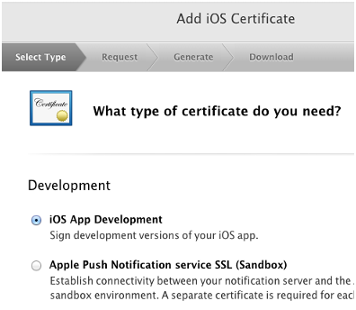
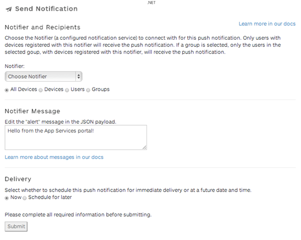

Tutorial: Push notifications sample app¶
In this tutorial, you’ll use a sample app (iOS, Android, or PhoneGap) to send yourself a push notification with the Nobackend push notification API. You’ll register with a push notification services (Apple APNs or Google GCM) to create the required security certificate or key, create the required Nobackend notifier to send a message, then modify, compile and run the sample app to see push notifications in action.
Note
For an overview of how to set up push notifications, including troubleshooting tips, see Adding Push Notification Support.
Before you begin¶
Before you can add support for push notifications, be sure that you’re set up for the requirements described in Adding push notifications support.
Step 1: Download a sample app¶
Sample push notification apps are included in the /samples directory of the following platform SDKs and plugins:
- Native iOS Download the SDK.
- Native Android Download the Android SDK.
- PhoneGap iOS & Android (HTML5) Download SDK.
To begin this tutorial, download the sample app for the platform of your choice.
A note to PhoneGap developers: PhoneGap requires a plugin to enable push notifications. The plugin is included in the sample apps in the JavaScript SDK. For new PhoneGap applications, download the PhoneGap push plugin.
Step 2: Register with a notification service and generate a certificate/key¶
To send push notifications you must register your app with the push notification service that corresponds to your app’s platform. Once registered, the service will provide you with a certificate or key that you will provide when creating an Nobackend notifier.
For a full walkthrough of how to register an app with a notification service and generate the necessary certificate/key, see Registering with a notification service.
Step 3: Create a notifier¶
Notifiers are entities that carry your push notifications to a notification service. Once a notification service has verified that your notifier contains valid credentials, it will deliver your push notification to the devices of your app’s users.
For information on how to use the admin portal to create a notifier, see Creating Notifier.
Step 4: Configure and run the sample app¶
In this step, you’ll open your sample app of choice in your IDE and configure it. The Android sample app can be run with an emulator, included in the Android Developer Tools. The iOS sample app must be run on an actual iOS device.
The following sections provide platform-specific guidance for setting up and running the samples. However, this content assumes that you understand your development environment well enough to configure and work with projects.
iOS Dev Setup¶
To configure and run the Native iOS push notification sample app, do the following:
- Open the iOS sample app with XCode by opening its .xcodeproj file.
- Make the following changes to /Push Test/AppDelegate.m:
- orgName: Your Apigee organization.
- appName: The app in your organization where you created the notifier. (For the sample, make sure it’s “sandbox”.)
- notifier: Name of the notifier you created. (For the sample, make sure it’s “appledev”.).
- Plug your iOS device into your development machine.
- In Xcode, select Window > Organizer to open the Xcode Organizer.
- Under Devices, select the device you plugged in, then click Add to Member Center. You may be prompted to log in with the Apple ID associated with your Apple Developer account.
- If prompted, select a Development Team to use for provisioning. This will be a team you’ve registered at the Apple developer portal.
- Log in to the [Apple Developer portal](https://developer.apple.com/) and create a provisioning profile that includes the App ID you chose when you registered the sample app with Apple APNs. For more information on how to create a provisioning profile, see “About provisioning profiles” below.
- Download the profile and add it into Xcode Organizer, in the Provisioning Profiles group under your plugged-in device.
- Close the Organizer.
- In Xcode, select the Project Navigator, then select the project root folder.
- In the General tab, in the Bundle Identifer box, enter the App ID associated with your provisioning profile.
- In the Build Settings tab, under Deployment, for the iOS Deployment Target select the iOS version on your connected device. The version is displayed in the Xcode Organizer.
- In the Build Settings tab, under Code Signing, under Code Signing Identity > Debug, select the Apple signing certificate corresponding to your developer identity.
- Click Run to launch the sample on your iOS device.
- When the “codesign wants to sign using key <Your Name> in your keychain.” dialog is displayed, click Allow.
- The project is now built, and the app is installed on your device. The first time you run the push sample app, your device will ask permission to allow push notifications. Tap OK.
- In the app, tap the push to this device button to send yourself a push notification. If you have configured your notification to go to multiple devices, tap the push to all devices button to send the push notification to all devices.
PhoneGap iOS Dev Setup¶
To configure and run the PhoneGap iOS push notification sample app, do the following:
- Open the iOS PhoneGap sample app with Xcode by opening its .xcodeproj file.
- Make the following changes in /www/js/index.js:
- orgName: Your Apigee organization.
- appName: The app in your organization where you created the notifier. (For the sample, make sure it’s “sandbox”.)
- notifier: Name of the notifier you created.
- Plug your iOS device into your development machine.
- In Xcode, select Window > Organizer to open the Xcode Organizer.
- Under Devices, select the device you plugged in, then click Add to Member Center. You may be prompted to log in with the Apple ID associated with your Apple Developer account.
- If prompted, select a Development Team to use for provisioning. This will be a team you’ve registered at the Apple developer portal.
- Log in to the [Apple Developer portal](https://developer.apple.com/) and create a provisioning profile that includes the App ID you chose when you registered the sample app with Apple APNs. For more information on how to create a provisioning profile, see “About provisioning profiles” below.
- Download the profile and add it into Xcode Organizer, in the Provisioning Profiles group under your plugged-in device.
- Close the Organizer.
- In Xcode, select the Project Navigator, then select the project root folder.
- In the General tab, in the Bundle Identifer box, enter the App ID associated with your provisioning profile.
- In the Build Settings tab, under Deployment, for the iOS Deployment Target select the iOS version on your connected device. The version is displayed in the Xcode Organizer.
- In the Build Settings tab, under Code Signing, under Code Signing Identity > Debug, select the Apple signing certificate corresponding to your developer identity.
- At the top of the IDE, ensure that the name for your plugged in device is displayed next to the target name, then click the Run button to launch the sample on your iOS device.
- If the “codesign wants to sign using key <your name> in your keychain” dialog is displayed, click Allow.
- The project is now built, and the app is installed on your device. The first time you run the push sample app, your device will ask permission to allow push notifications. Tap OK.
- In the app, tap the Send a push with Phonegap! button to send yourself a push notification.
About iOS provisioning profiles¶
For iOS app testing, you need a provisioning profile that’s associated with an Apple ID. You set up the provisioning profile in the Apple developer portal, download the profile, and import it into Xcode.
To set up a provisioning profile, you need to create an “iOS App Development” certificate in the Apple developer portal. For example, in the Apple APNs setup earlier in this tutorial, you created a certificate in the Apple developer portal to be used for push notifications. However, you won’t be able to create a provisioning portal with just that certificate. You also need to create an “iOS App Development” certificate (the configuration settings don’t matter), as shown in the following image.
After you create an iOS App Development certificate, you can create a provisioning profile that includes your App ID/certificate for push notifications.
Android Dev Setup¶
To configure and run the native Android push notification sample app, do the following:
- Make sure you have the latest Android SDK installed in your IDE, and that Android APIs have been installed via the Android SDK Manager.
- Import the native Android sample app project into your IDE
- Modify the following in /src/com.ganyo.pushtest/Settings.java:
- GCM_SENDER_ID: Your Google Cloud Messaging (GCM) project number, as described in the Tutorial: Push notifications sample app.
- NOTIFIER: Name of your notifier. (For the sample, make sure it’s the name of the notifier you created.)
- ORG: Your Apigee organization.
- APP: The app in your organization where you created the notifier. (For the sample, make sure it’s “sandbox”.)
- USER and PASSWORD: Optional. If you created your notifier in an app other than “sandbox” (which doesn’t require authentication), enter the username and password of one of your Nobackend admin users.
- In AndroidManifest.xml, be sure the proper Android permissions are included, such as READ_PHONE_STATE and VIBRATE.
- In your project properties, go to Java Build Path > Libraries and add all the JAR files from the project’s /libs directory.
- In the Order and Export tab, move the JARs to the top of the list and select all the check boxes. Make sure the order and selections match the following image:
- If you’re using an emulator, configure the emulator to use the Google APIs Level 16 target.
- Run the project as an Android Application. The IDE should compile the project and install the app on your device.
- Press the button on the app to send yourself a push notification.
PhoneGap Android Dev Setup¶
To configure and run the PhoneGap Android push notification sample app, do the following:
- Make sure you have the latest Android SDK installed in your IDE, and that Android APIs have been installed via the Android SDK Manager.
- Import the PhoneGap Android sample app project into your IDE.
- Modify the following in /assets/www/js/index.js:
- orgName: Your apigee organization.
- appName: The app in your organization where you created the notifier. (For the sample, make sure it’s “sandbox”.)
- notifier: Name of your notifier.
- senderID: Your API project number (the project must support Google Cloud Messaging for Android (GCM)), as described in the [Registering with a notification service](registration.html).
- In AndroidManifest.xml, be sure the proper Android permissions are included. This includes READ_PHONE_STATE and VIBRATE.
- In your project properties, go to Java Build Path > Libraries and add all the JAR files from the project’s /libs directory.
- In the Order and Export tab, move the JARs to the top of the list and select all the check boxes. Make sure the order and selections match the following image:
- If you’re using an emulator, configure the emulator to use the Google APIs Level 16 target or above. Also, be sure to see the Android requirements in [Adding push notifications support](adding-push-supprt.html) for steps on setting up the emulator to support push notifications.

- Run the project as an Android Application. The IDE should compile the project and install the app on your device.
- Press the button on the app to send yourself a push notification.
Note
For troubleshooting tips, see [Adding push notifications support](adding-push-supprt.html)
More about PhoneGap¶
The PhoneGap iOS push notification sample was created using standard web technologies such as HTML5, JavaScript, and CSS. You build the app with those technologies, and PhoneGap provides project templates for iOS, Android, and other platforms. For example, atop platform-specific PhoneGap code, core app code between the iOS and Android samples is essentially the same.
When using PhoneGap to develop push notification apps, you use a PhoneGap plugin designed to support push notifications. That plugin is included in the Apigee samples. For more about the plugin, see the plugin’s GitHub project.
Step 5: Review the data entities created by the sample app¶
- Log in to the admin portal, and select Data in the left navigation pane.
- Select any of the following collections to view the entities that were created in them by the push notification sample app:
/devices- To see the device that was added./notifications- To see the notification that was sent./receipts- To see the receipt generated from the successful push.
Step 6: Send additional push notifications using other Nobackend tools¶
Send a push notification from the Nobackend Notifications console On the Send Notification screen. Select your notifier, select All Devices, enter a message, select Now, and click to send it.
Send a push notification directly via the push notifications API¶
Use the following curl command in a terminal window, replacing your-org, your-app and notifier-name.
curl -X POST "https://api.tbaas.co/your-org/your-app/devices/*/notifications" -d '{"payloads":{"notifier-name":"I just sent another notification! Yea, me!"}}'